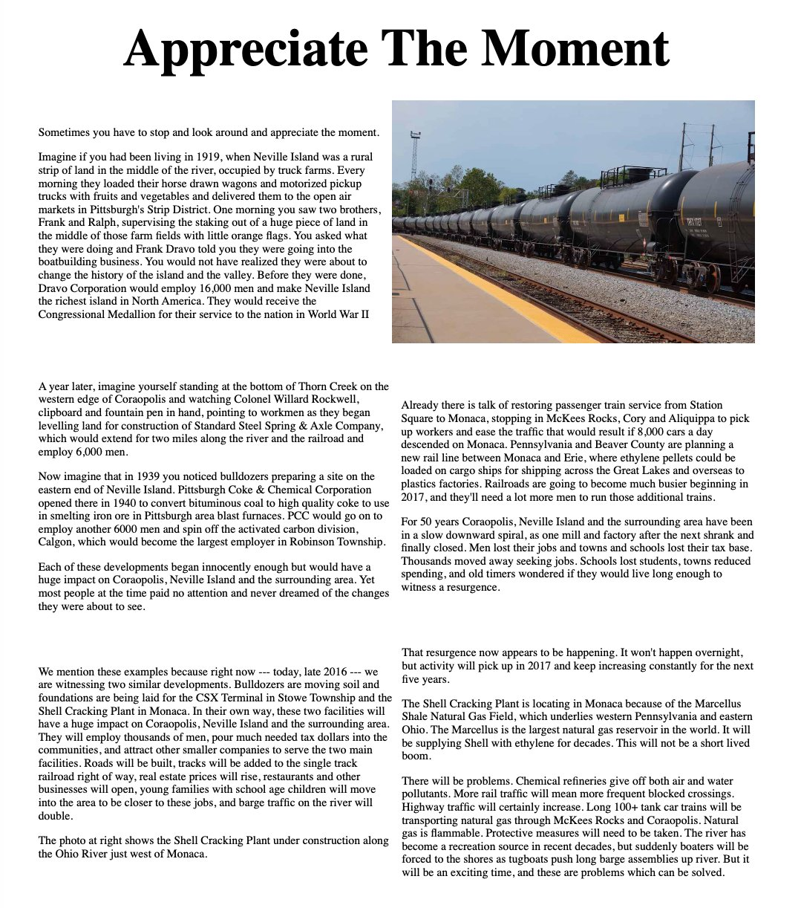
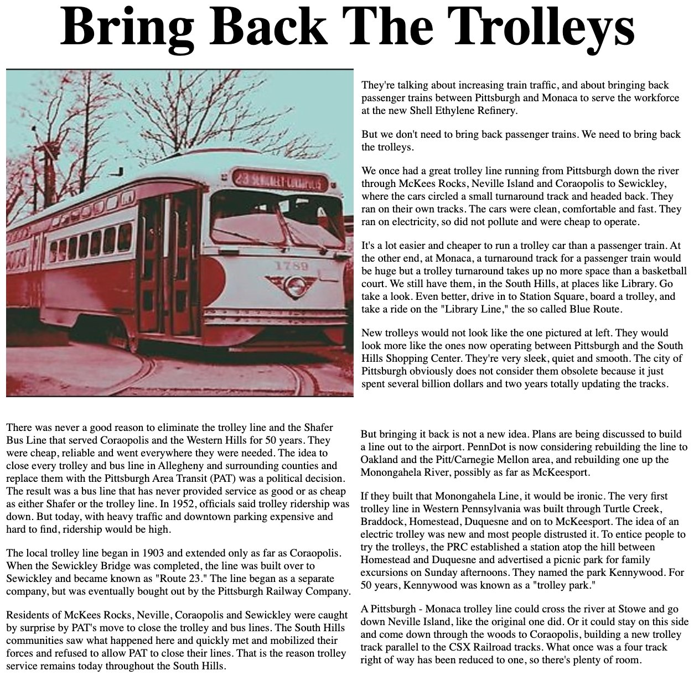

Two Coraopolis Record opinion pieces
The Coraopolis Record, Opinion page, late 2016 – early 2017
The Coraopolis Record was the weekly newspaper for Coraopolis and the Western Hills from 1892 to 1980. It was revived as an online paper and Facebook page in the 2010s at coraopolisrecord.com. Two unsigned editorials on its Opinion page look back at Neville Island and the river towns at the moment the Shell cracker plant at Monaca and the CSX terminal in Stowe Township were under construction. They are opinion pieces: dates and figures are the paper's, not ours.
Appreciate The Moment
Written in late 2016 ("right now — today, late 2016"). The column walks through the developments that remade the island and the valley, each of which "began innocently enough":
- 1919: Frank and Ralph Dravo stake out a boatyard in the Neville Island truck farms. Dravo Corporation grew to 16,000 workers.
- 1920: Col. Willard Rockwell begins Standard Steel Spring & Axle at Thorn Creek, two miles along the river and railroad, 6,000 workers.
- 1939–40: Pittsburgh Coke & Chemical opens on the east end of the island to make furnace coke, later spinning off Calgon.
It then argues that the Shell plant and the CSX terminal would do the same again: more trains, tank trains of 100-plus cars through McKees Rocks and Coraopolis, and more barge traffic on the river.
Railroads are going to become much busier beginning in 2017, and they'll need a lot more men to run those additional trains.


Bring Back The Trolleys
With passenger trains between Pittsburgh and Monaca being proposed for the Shell workforce, the paper argues for the trolley instead. It recalls the line from Pittsburgh through McKees Rocks, Neville Island and Coraopolis to Sewickley, which became Route 23 once the Sewickley Bridge was built, and the Shafer Bus Line that served Coraopolis and the Western Hills. It blames the political decision to replace both with Pittsburgh Area Transit (PAT), and contrasts the South Hills communities that kept their trolleys.
A Pittsburgh - Monaca trolley line could cross the river at Stowe and go down Neville Island, like the original one did.


Source
Both pieces were on coraopolisrecord.com/Opinion.html by the first Internet Archive capture on 16 March 2017 and were still there in December 2022. The trolley piece was later revised: the version shown above, with the 1903 and 1952 dates, matches the December 2022 capture. The live site no longer serves the page.
- Opinion page, 16 March 2017 (earliest capture; earlier text of the trolley piece)
- Opinion page, 3 December 2022 (text shown here)
- Coraopolis Record home page, March 2017
Related: Neville Island coke, cement, and chemical history · Pittsburgh & Ohio Valley Railway